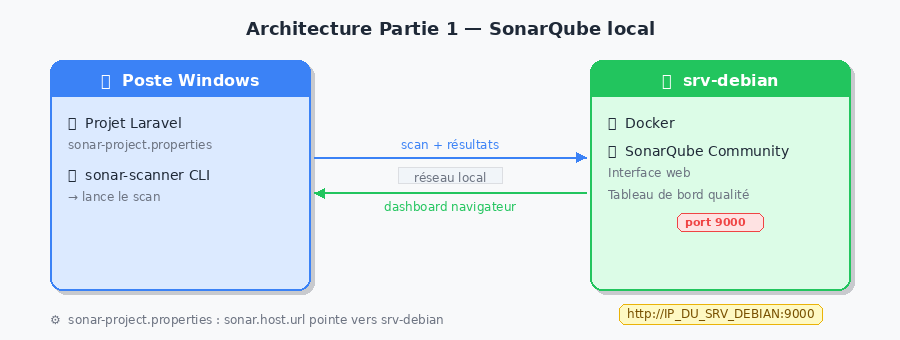
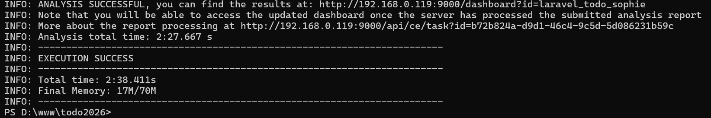
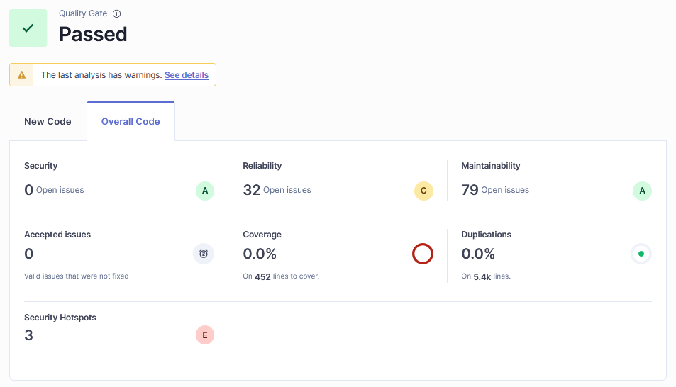
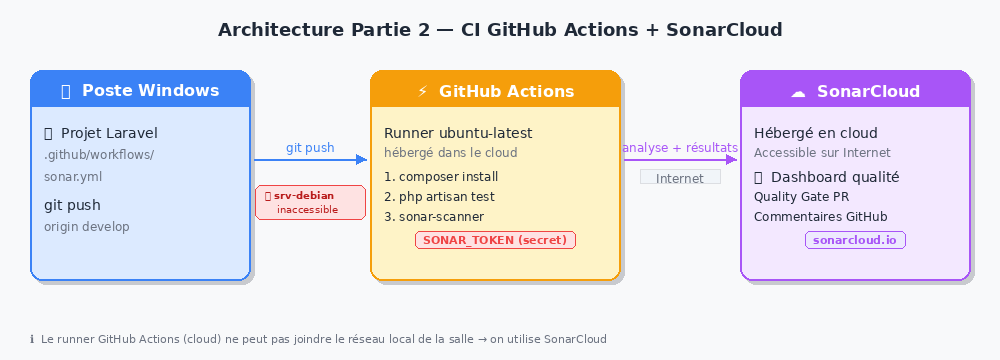
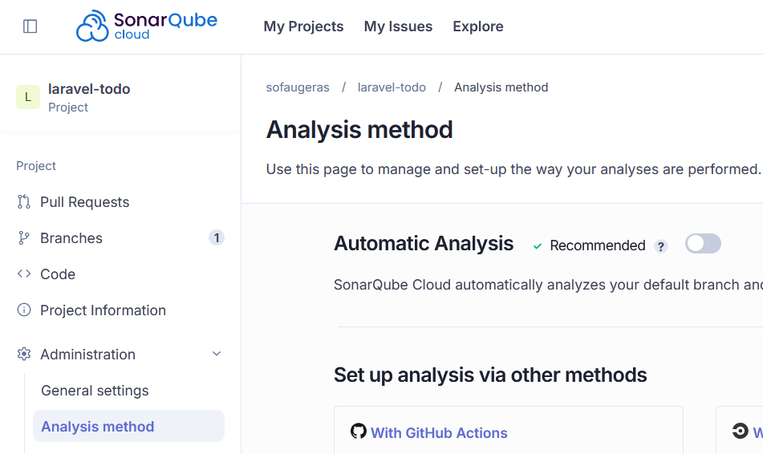
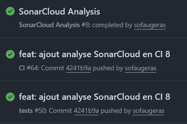
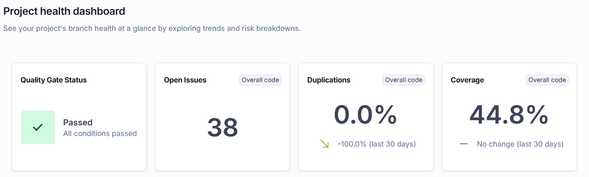

TP — Audit de code avec SonarQube 👮♀️⚓︎
Compétences visées (B3.5)
- Analyser et corriger les vulnérabilités détectées à l'issue d'un audit de sécurité d'une application web
- Utiliser des outils d'analyse statique intégrés dans une chaîne CI/CD
- Vérifier la conformité d'une solution applicative à un référentiel de sécurité
Architecture du TP
Ce TP implique deux machines distinctes :
| Machine | Rôle |
|---|---|
| srv-debian (serveur commun) | Héberge SonarQube via Docker |
| Poste Windows (poste étudiant) | Héberge le projet Laravel + lance le scan |

Prérequis
- Votre projet Laravel est installé sur votre poste Windows
- Vous avez accès au srv-debian via le réseau local de la salle (IP
192.168.0.119)
Construction du Compte-Rendu Audit de code - SonarQube
- Capture d'écran du dashboard SonarQube (srv-debian) après le scan — Partie 1
- Fichier
sonar-project.propertiesavec le token masqué (***) - Fichier
.github/workflows/sonar.ymlfonctionnel - Capture d'écran du workflow GitHub Actions (vert ou rouge avec explication)
- Capture d'écran du dashboard SonarCloud après la CI
- Réponses rédigées aux questions 1.1 à 2.5
1. SonarQube sur srv-debian + scan depuis Windows 🔍⚓︎
1.0 Lancement de SonarQube (fait par l'enseignant) 🧑🏫⚓︎
ℹ️ Cette étape a déjà été réalisée sur le srv-debian. Elle est documentée ici pour votre culture DevOps.
Sur le srv-debian, en SSH :
docker network create sonar-net
docker run -d \
--name sonarqube \
--network sonar-net \
-p 9000:9000 \
-e SONAR_ES_BOOTSTRAP_CHECKS_DISABLE=true \
sonarqube:community
SonarQube est accessible depuis tous les postes de la salle à l'adresse http://192.168.0.119:9000
1.1 Se connecter et créer votre projet 🔑⚓︎
Depuis votre navigateur Windows, accédez à http://192.168.0.119:9000
Identifiants : votre_prenom / vzfC8eDN*ym7
Découverte de l'interface 🆕
Vous disposez désormais d'une barre latérale verticale à gauche avec les sections suivantes :
| Icône | Section | Contenu |
|---|---|---|
| 🏠 | Projects | Liste de tous les projets analysés |
| ⚠️ | Issues | Tous les problèmes détectés, filtrables par projet |
| 📋 | Rules | Catalogue complet des règles d'analyse |
| 🔒 | Quality Policies | Quality Gates et Quality Profiles |
| 🔒 | Qulaity Gates | |
| ⚙️ | Administration | Paramètres globaux de l'instance |
Une fois dans un projet, une sidebar de projet apparaît avec :
| Section | Contenu |
|---|---|
| Overview | Tableau de bord résumé + Quality Gate |
| Issues | Problèmes filtrés sur ce projet |
| Security Hotspots | Points de sécurité à revoir manuellement |
| Measures | Toutes les métriques détaillées |
| Code | Navigation dans les fichiers sources |
| Activity | Historique des analyses |
Création du projet⚓︎
- Cliquez sur Projects dans la sidebar gauche
- Cliquez sur Create a local project (bouton en haut à droite)
- Choisissez Manually
- Display name :
laravel-nomProjet-prenomet Project key duplique ce nom - Main branch name : main
- Cliquez sur Next, choisir Follows the Instance's Default puis Create project
- How do you want to analyze your repository? Choisissez Locally
- Cliquez sur Generate a token → donnez-lui un nom "Analyze "laravel_todo_prenom" et une date d'expiration "30 days"→ Generate
- Copiez et notez le token — il ne sera plus affiché
1.2 Installer Sonar Scanner sur Windows 💻⚓︎
Téléchargez le scanner CLI pour Windows :
Décompressez dans C:\sonar-scanner.
Ajoutez C:\sonar-scanner\bin au PATH Windows :
- Rechercher "Variables d'environnement" dans le menu Démarrer
- Variables système → Path → Modifier → Nouveau
- Ajouter :
C:\sonar-scanner\sonar-scanner-5.0.1.3006-windows\bin(vérifier avant que vous avez bien ces niveaux de dossier) - Lancer un terminal
Vérification dans un nouveau PowerShell :
sonar-scanner --version
1.3 Configurer le projet Laravel 📝⚓︎
À la racine de votre projet Laravel, créez sonar-project.properties :
sonar.projectKey=laravel-prenom
sonar.projectName=Laravel-Todo_prenom
sonar.sources=app,routes,database,resources
sonar.exclusions=vendor/**,node_modules/**,storage/**,bootstrap/cache/**,public/**
sonar.language=php
sonar.sourceEncoding=UTF-8
sonar.host.url=http://192.168.0.119:9000
sonar.login=VOTRE_TOKEN_ICI
Ne pas versionner ce fichier ⚠️
Ajoutez sonar-project.properties à votre .gitignore — il contient votre token.
1.4 Lancer le scan ▶️⚓︎
Ouvrez un PowerShell à la racine de votre projet :
cd C:\chemin\vers\mon-projet-laravel
sonar-scanner
Résultat attendu :

1.5 Lire les résultats dans l'interface 👀⚓︎
Retournez dans le navigateur. Naviguez vers votre projet via Projects dans la sidebar.
Vue Overview⚓︎
La page d'accueil du projet affiche le Quality Gate (Passed / Failed) et une synthèse des métriques réparties en deux colonnes :
- New Code : métriques sur le code récemment modifié
- Overall Code : métriques sur la totalité du code
C'est cette dernière métrique qui va nous intéresser puisque nouos avons que du nouveau code.
Les notes de qualité s'affichent sous forme de lettres A à E pour :
| Catégorie | Contenu |
|---|---|
| Reliability | Bugs détectés |
| Security | Vulnérabilités |
| Maintainability | Code smells + dette technique |
| Security Review | Taux de hotspots revus |
| Coverage | Couverture de tests (si configurée) |
| Duplications | Taux de duplication |

1.6 ❓ Questions⚓︎
Question 1.1 📊
Dans la vue Overview de votre projet, relevez les métriques affichées.
Notez la note de chaque catégorie (A à E) et la dette technique estimée.
Faites une capture d'écran de cette vue et commencez votre compte-rendu de TP
Vous devez doit relever les 4 à 6 indicateurs visibles sur l'Overview :
- Reliability : note A à E selon le nombre de bugs
- Security : note A à E selon les vulnérabilités
- Maintainability : note A à E selon les code smells, accompagnée de la dette technique en minutes/heures/jours
- Security Review : note basée sur le % de Security Hotspots revus (A = ≥ 80% revus)
Un projet Laravel bien structuré affiche généralement A ou B.
Un projet legacy peut afficher C, D ou E avec plusieurs heures de dette.
Question 1.2 🐛
Cliquez sur Issues dans la sidebar de projet.
Identifiez 3 problèmes détectés. Pour chacun, relevez : le fichier concerné, la ligne, le type et la sévérité.
Vous devez renseigner un tableau de ce type :
| # | Fichier | Ligne | Type | Sévérité | Description |
|---|---|---|---|---|---|
| 1 | app/Http/Controllers/UserController.php |
42 | Code Smell | Major | Méthode trop longue |
| 2 | routes/web.php |
15 | Vulnerability | Critical | Absence de middleware auth |
| 3 | app/Models/Post.php |
8 | Code Smell | Minor | Variable non utilisée |
Types d'issues en v26 (mode Standard Experience) :
| Type | Signification |
|---|---|
Bug |
Comportement incorrect, risque d'erreur à l'exécution |
Vulnerability |
Faille de sécurité exploitable |
Code Smell |
Problème de maintenabilité, lisibilité ou structure |
Security Hotspot |
Zone sensible à revoir manuellement |
Sévérités :
| Sévérité | Signification |
|---|---|
Blocker |
À corriger immédiatement, bloque la production |
Critical |
Risque de sécurité ou comportement incorrect majeur |
Major |
Impact fort sur la maintenabilité |
Minor |
Problème de style ou de lisibilité |
Info |
Suggestion, pas de risque immédiat |
Astuce navigation : dans la vue Issues du projet, la sidebar gauche permet de filtrer par Type, Sévérité, Langage, Règle, ou Fichier. Les issues sont regroupées par fichier.
Question 1.3 🔐
Cliquez sur Security Hotspots dans la sidebar de projet.
Repérez un hotspot. Expliquez pourquoi SonarQube le signale et déterminez s'il s'agit d'un vrai risque ou d'un faux positif.
Rappel de la différence Vulnerability / Security Hotspot en v26 :
- Vulnerability (dans Issues) : faille confirmée, à corriger immédiatement
- Security Hotspot : code sensible qui pourrait être dangereux selon le contexte — c'est à l'auditeur humain de trancher
Hotspots les plus fréquents dans un projet Laravel :
| Règle | Exemple | Risque réel ? |
|---|---|---|
| PRNG non sécurisé | rand() ou mt_rand() pour token |
Oui si token sécurité, non si slug |
| Requête potentiellement non paramétrée | Concaténation dans DB::select() |
Oui si variable utilisateur |
| Désactivation CSRF | Route sans middleware | Oui si formulaire public |
| Log de données sensibles | Log::info($password) |
Oui |
Cycle de vie d'un Hotspot :
Un hotspot peut être marqué :
- To review (défaut) — en attente d'analyse
- Acknowledged — risque identifié, correction en cours
- Fixed — corrigé
- Safe — analysé, pas de risque dans ce contexte (faux positif)
Question 1.4 📐
Cliquez sur Measures dans la sidebar de projet.
Relevez la complexité cyclomatique et le taux de duplication.
Expliquez ce que mesure la complexité cyclomatique et ce qu'implique un taux de duplication élevé.
Navigation pour les Measures :
Dans la sidebar du projet → Measures → les métriques sont regroupées par catégorie :
- Reliability → bugs
- Security → vulnérabilités
- Maintainability → code smells, dette, complexité
- Coverage → couverture de tests
- Duplications → duplication
Complexité cyclomatique : nombre de chemins d'exécution indépendants dans une fonction. Se calcule en comptant les branchements : if, else, for, while, case, &&, ||…
| Valeur | Interprétation |
|---|---|
| 1 – 5 | Simple, facile à tester |
| 6 – 10 | Modérément complexe |
| 11 – 20 | Difficile à tester, à refactoriser |
| > 20 | Très complexe, risque élevé de bugs |
Taux de duplication :
Un taux > 3 % est un signal d'alarme.
Code copié-collé : une correction faite à un endroit risque d'être oubliée à l'autre.
Solution : extraire le code commun dans une méthode ou un composant réutilisable.
Définition : 💡 La complexité cyclomatique est une mesure quantitative de la complexité d'un programme informatique utilisée en informatique
Note : la complexité cyclomatique se trouve dans Measures → Maintainability → Complexity.
SonarQube calcule aussi la complexité cognitive (plus récente) qui mesure la difficulté de compréhension humaine.
Question 1.5 🛠️
Choisissez un bug ou une vulnérabilité détectée.
Proposez une correction du code PHP/Laravel et expliquez en quoi cette correction améliore la sécurité ou la qualité.
Exemple 1 — Injection SQL
// ❌ Code vulnérable
$users = DB::select("SELECT * FROM users WHERE email = '" . $email . "'");
// ✅ Requête paramétrée
$users = DB::select("SELECT * FROM users WHERE email = ?", [$email]);
// ✅ Ou avec Eloquent (recommandé Laravel)
$users = User::where('email', $email)->get();
Exemple 2 — Méthode trop complexe (refactoring)
Découper une méthode de 60 lignes avec 8 if en plusieurs méthodes privées
de 10 à 15 lignes chacune, chacune avec une seule responsabilité (principe SRP).
2. Intégration dans la CI avec GitHub Actions + SonarCloud ⚡⚓︎
Pourquoi SonarCloud et pas SonarQube ici ? ☁️
La CI GitHub Actions s'exécute sur des runners cloud hébergés par GitHub.
Ces runners n'ont aucun accès au réseau local de la salle : impossible de joindre le srv-debian.
On utilise donc SonarCloud, la version hébergée de SonarQube accessible depuis Internet.

2.1 Créer un compte SonarCloud 🌐⚓︎
- Rendez-vous sur https://sonarcloud.io
- Connectez-vous avec votre compte GitHub
- Importez votre dépôt Laravel
- Notez votre
SONAR_ORGANIZATIONet leSONAR_PROJECT_KEY - Ne pas ajouter All repositories.
- Créer un nouveau projet qui prend votre dépot Todo > Laisser la première analys de faire
- Dans votre profile > Secuity > Générer un nouveau Token
2.2 Ajouter le token en secret GitHub 🔐⚓︎
- Sur votre dépôt GitHub → Settings → Secrets and variables → Actions
- New repository secret
- Nom :
SONAR_TOKEN— Valeur : le token généré sur SonarCloud
2.3 Créer le workflow GitHub Actions 📄⚓︎
Depuis votre poste Windows, créez .github/workflows/sonar.yml :
name: SonarCloud Analysis
# Se déclenche uniquement quand le workflow "tests" est terminé
on:
workflow_run:
workflows: [ "tests" ]
types: [ completed ]
jobs:
sonarcloud:
name: Analyse SonarCloud
runs-on: ubuntu-latest
# Lance le scan que les tests aient réussi ou échoué
if: ${{ github.event.workflow_run.conclusion != 'cancelled' }}
steps:
- name: Checkout du code
uses: actions/checkout@v4
with:
fetch-depth: 0
# Récupère le coverage.xml produit par tests.yml
- name: Télécharger le rapport de couverture
uses: actions/download-artifact@v4
with:
name: coverage-report
github-token: ${{ secrets.GITHUB_TOKEN }}
run-id: ${{ github.event.workflow_run.id }}
continue-on-error: true # le scan part même si coverage absent
- name: Analyse SonarCloud
uses: SonarSource/sonarcloud-github-action@v3
env:
GITHUB_TOKEN: ${{ secrets.GITHUB_TOKEN }}
SONAR_TOKEN: ${{ secrets.SONAR_TOKEN }}
with:
args: >
-Dsonar.organization=VOTRE_ORGANISATION
-Dsonar.projectKey=PRENOM_laravel-todo
-Dsonar.sources=app,routes,database
-Dsonar.exclusions=vendor/**,node_modules/**
-Dsonar.php.coverage.reportPaths=coverage.xml
On doit également modifier tests.yml pour produire un fichier coverage.xml que pourras lire sonarQube.
Remplacer
- name: Run tests with coverage
env:
XDEBUG_MODE: coverage
run: php artisan test --coverage --min=80 || true
par
- name: Run tests with coverage
env:
XDEBUG_MODE: coverage
run: php artisan test --coverage-clover=coverage.xml || true
# Dépose le rapport pour que sonar.yml puisse le récupérer
- name: Upload coverage report
if: always()
uses: actions/upload-artifact@v4
with:
name: coverage-report
path: coverage.xml
retention-days: 1
2.4 Pousser et observer ▶️⚓︎
git add .github/workflows/sonar.yml .gitignore
git commit -m "feat: ajout analyse SonarCloud en CI"
git push origin main
Secrets à ne jamais versionner ⚠️
Vérifiez que votre .gitignore contient :
sonar-project.properties
.env
Fix Failed Sonar analysis
09:29:03.905 ERROR You are running CI analysis while Automatic Analysis is enabled. Please consider disabling one or the other.
09:29:04.235 INFO EXECUTION FAILURE
09:29:04.237 INFO Total time: 13.087s
SonarCloud fait deux analyses en même temps : la tienne via GitHub Actions, et une analyse automatique qu'il déclenche tout seul. Il faut désactiver l'analyse automatique sur SonarCloud.

Résultats⚓︎
Vérifier que votre CI passe intégralement dans GitHub Actions

puis consulter le rapport d'analyse dans l'interface SonarQube Cloud

2.5 ❓ Questions⚓︎
Question 2.1 🌐
Expliquez pourquoi on utilise SonarCloud dans la CI et non le SonarQube du srv-debian.
Quel problème réseau cela pose-t-il et comment pourrait-on le contourner en entreprise ?
Raison principale : les runners GitHub Actions sont des machines cloud.
Ils n'ont aucun accès au réseau local de la salle → impossible de joindre 192.168.x.x:9000.
Contournements possibles en entreprise :
| Solution | Description | Contexte |
|---|---|---|
| SonarCloud | Version SaaS hébergée | Projets pouvant aller en cloud |
| Self-hosted runner | Runner GitHub installé sur le srv-debian | Réseau interne, projets confidentiels |
| VPN | Tunnel entre runner cloud et réseau interne | Infrastructure hybride |
| Reverse proxy HTTPS | srv-debian exposé via nginx + certificat | Si la politique sécurité le permet |
La solution self-hosted runner est la plus pertinente dans notre contexte :
on installe le runner GitHub directement sur le srv-debian, qui peut alors
communiquer avec SonarQube en local (http://localhost:9000).
Question 2.2 🔄
Expliquez à quoi sert fetch-depth: 0 dans l'étape Checkout.
Que se passerait-il si on le supprimait ?
Par défaut, actions/checkout fait un shallow clone : il ne récupère que le dernier commit.
SonarCloud a besoin de l'historique complet pour :
- Distinguer le new code de l'overall code (base du Quality Gate)
- Calculer les métriques d'évolution dans le temps
- Comparer correctement les branches sur les Pull Requests
Sans fetch-depth: 0, SonarCloud peut échouer ou produire des résultats incomplets,
en particulier sur les analyses de Pull Requests où il compare avec la branche cible.
Question 2.3 🗄️
Quel est le rôle du .env.testing dans la CI ?
Pourquoi le .env ne doit-il jamais être versionné ?
Rôle du .env.example :
Fichier modèle versionné sans valeurs sensibles.
Dans la CI, il sert à créer un .env fonctionnel pour exécuter les tests
(base SQLite en mémoire, clé d'application générée à la volée).
Pourquoi ne pas versionner .env :
Il contient des secrets : DB_PASSWORD, APP_KEY, clés d'API tierces…
Risques si versionné :
- Toute personne ayant accès au dépôt voit les secrets
- Des bots scannent GitHub en permanence (GitGuardian, truffleHog)
- L'historique Git conserve les fichiers même après suppression (
git log -- .env)
Bonne pratique : utiliser les Secrets GitHub et les injecter en variables d'environnement.
Question 2.4 ⚖️
Comparez les deux approches de ce TP.
Quels sont les avantages et inconvénients de chaque configuration ?
| Critère | SonarQube sur srv-debian (Partie 1) | SonarCloud en CI (Partie 2) |
|---|---|---|
| Déclenchement | Manuel depuis Windows | Automatique à chaque push/PR |
| Localisation données | Réseau local, données internes | Cloud, données chez SonarSource |
| Accessibilité | Réseau local uniquement | Accessible depuis Internet |
| Intégration PR | Non native | Oui, commentaires automatiques |
| Infrastructure | À maintenir (srv-debian) | Infogérée |
| Confidentialité | Totale (code ne quitte pas le réseau) | Code envoyé vers le cloud |
| Coût | Gratuit (Community Build) | Gratuit projets open-source |
Conclusion :
L'approche srv-debian est idéale pour des projets confidentiels ou des audits ponctuels.
L'approche SonarCloud en CI garantit une qualité continue et automatisée, adaptée aux projets hébergés publiquement sur GitHub.
🏁 Bilan du TP⚓︎
Ce que vous avez mis en pratique ✅
- Déploiement et utilisation de SonarQube Community Build via Docker sur un serveur partagé
- Navigation dans la nouvelle interface verticale de SonarQube
- Configuration du scanner sur un poste Windows pour analyser un projet PHP/Laravel
- Lecture et interprétation d'un rapport d'audit : Overview, Issues, Security Hotspots, Measures
- Intégration d'un Quality Gate dans une pipeline GitHub Actions via SonarCloud
- Compréhension des contraintes réseau entre environnement local et cloud
Suite ...
Et si l'on faisait la même analyse avec bijoo ...